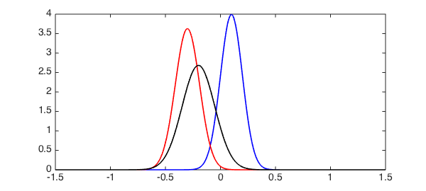
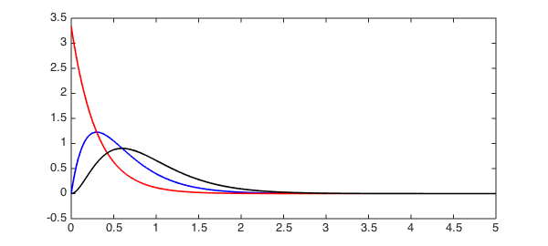
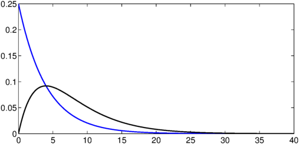
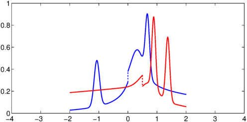
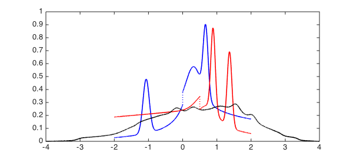

LW = 'linewidth'; FS = 'fontsize'; MS = 'markersize';
It is well known that the probability distribution of the sum of two or more independent random variables is the convolution of their individual distributions, defined by
$$ h(x) = \int_{-\infty}^\infty f(t) g(x-t) dt. $$
Many standard distributions have simple convolutions, and here we investigate some of them before computing the convolution of some more exotic distributions.
Normal distribution
The normal distribution has the PDF
$$ f(x; \mu, \sigma) = \frac{1}{\sigma\sqrt{2\pi}} e^{-(x-\mu)^2/2\sigma^2}. $$
Let's make an anonymous function that can compute it:
normalDist = @(x, mu, s) exp(-.5*(x-mu).^2/s^2) / (s*sqrt(2*pi));
Now let's make two normal distributions with differing parameters, N1 as $N(\mu_1, \sigma_1)$ and N2 as $N(\mu_2, \sigma_2)$. To make things easier, we'll truncate to a finite domain.
dom = [-1.2 1.2];
x = chebfun('x', dom);
s1 = .1; m1 = .1;
N1 = normalDist(x, m1, s1);
s2 = .11; m2 = -.3;
N2 = normalDist(x, m2, s2);
We can compute the distribution of the sum of two variables drawn from these distributions by convolving N1 and N2:
N3 = conv(N1, N2); plot(N1, 'b', N2 ,'r', N3, 'k', LW, 1.6), set(gca, FS, 14) xlim([-1.5 1.5])

One can show (see, for example, [1]) that N3 should be equal to $N(\mu_1+\mu_2, \sigma_1^2+\sigma_2^2)$. Let us verify this:
N4 = normalDist(x, m1 + m2, sqrt(s1^2 + s2^2));
norm(N4 - N3{dom(1), dom(2)})
ans =
2.183854302009455e-14
Gamma distribution
We next consider the gamma distribution, which has the PDF
$$ f(x, k, \theta) = \frac{x^{k-1}e^{-x/\theta}} {\theta^k\Gamma(k)}, \quad x\ge0. $$
As before, let's compute the distribution for the sum of two variables drawn from such distributions by using conv:
gammaDist = @(x, k, t) x.^(k-1).*exp(-x./t) / (t^k*gamma(k));
dom = [0 5];
x = chebfun('x', dom);
k1 = 2; t = .3;
G1 = gammaDist(x, k1, t);
k2 = 1;
G2 = gammaDist(x, k2, t);
G3 = conv(G1, G2);
plot(G1, 'b', G2 ,'r', G3, 'k', LW, 1.6)
xlim([0 5])

In this instance, we should have
$$ G(k_1, \theta) + G(k_2, \theta) = G(k_1 + k_2, \theta): $$
G4 = gammaDist(x, k1 + k2, t);
norm(G4 - G3{dom(1), dom(2)})
ans =
3.705400930768999e-14
Exponential distribution
As our final example of common distributions, let's look at the exponential distribution, which has the PDF
$$ f(x, \lambda) = \lambda e^{-\lambda x}, \quad x\ge0. $$
dom = [0 40];
x = chebfun('x', dom);
expDist = @(x, lam) lam*exp(-lam*x);
This time we make just a single distribution, $E(0.9)$, which we convolve with itself to give the distribution for the sum of two variables from $E(0.9)$.
lam = .25; E = expDist(x, lam); E2 = conv(E, E); plot(E, 'b', E2, 'k', LW, 1.6) xlim([0 40])

In this instance, the theory tells us we should have a gamma distribution, which indeed we do:
E3 = gammaDist(x, 2, 1/lam);
norm(E3 - E2{dom(1), dom(2)})
ans =
9.113016718859841e-16
Exotic distributions
Of course, the relationships verified above are available in closed form only for certain special cases. For more exotic distributions the convolution must be computed numerically.
Let's do this for two exotic (and discontinuous) probability distributions, arbitrarily defined by summing a Heaviside function with a number of Gaussians and then normalising.
rng('default')
x = chebfun('x', [-2 2]);
F = heaviside(x);
G = heaviside(.5-x);
for k = 1:10
F = F + normalDist(x, randn, 2*rand);
G = G + normalDist(x, randn, 2*rand);
end
F = F/sum(F);
G = G./sum(G);
Here are the distributions themselves:
plot(F,'b', G, 'r', LW, 1.6) xlim([-4 4]);

And this is the distribution of the random variable $z=x+y$, where $x$ is drawn from $F$ and $y$ is drawn from $G$:
tic h = conv(F, G); toc hold on, plot(h, 'k', LW, 1.6), hold off
Elapsed time is 0.506917 seconds.

References
-
http://en.wikipedia.org/wiki/List_of_convolutions_of_probability_distributions
-
Nick Hale and Alex Townsend, "Convolution of compactly supported functions", in preparation.